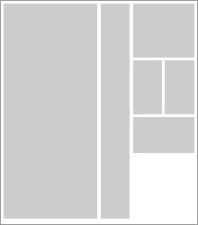

Sîmple
~ Grilla CSS ~
Porqué nace Sîmple
"Las Grillas CSS (Framework CSS) son el mejor amigo del diseñador web después del CSS mismo. El único problema con ellas es que la mayoría son complejas y densas en estructura, con una curva de aprendizaje larga y algunas de ellas ofrecen soluciones que abusan de contenedores vacíos para mantener la estructura funcionando. Luego de estudiar y usar algunas, decidí crear Sîmple, mi propia Grilla CSS, adaptada a mis reales necesidades y bajo 3 condiciones básicas que definen su estructura y funcionamiento:
1. economía de css/html, 2. escalable y crossbrowser, 3. fácil de implementar y manipular."
Ver demo Sîmple Descargar Sîmple Descargar Sîmple + Manual + Ejemplos
ó ir al repositorio donde está el Código Sîmple , el Manual y los ejemplos online.
Menos código, más velocidad
Una de las varias herramientas para aumentar la velocidad de carga de las páginas de un sitio es hacer una estructura CSS/html robusta y con el menor uso de código posible. Esto disminuye la cantidad de llamados a servidores y facilita a los robots de los buscadores el registro del contenido al tener nuestro contenido más agrupado y no atomizado en distintos pequeños contenedores.
Escalable y crossbrowser
Escalable
Sîmple permite levantar fácil y rápidamente cualquier tipo de estructura básica de un sitio. Esta estructura puede ser rápidamente modificada.
Crossbrowser
Sîmple mantiene su estructura y consistencia en los browsers estádisticamente más usados y en las siguientes plataformas:
Firefox (Windows, Mac, Linux) | Explorer 7, 6 y 5.5 (Windows) | Opera (Windows, Linux) | Chrome (Windows) | Safari (Windows, Mac)
Fácil de usar
Sîmple es muy fácil de usar si se tienene buenos conocimientos de CSS/html. Pero incluso si los conocimientos son básicos, sólo con seguir las instrucciones del breve Manual Sîmple es posible levantar una estructura CSS/html en muy poco tiempo.
Ejemplos
Sîmple puede levantar cualquier tipo de estructura que se requiera, desde las básicas de 2 y 3 columnas hasta estructuras de blogs o sitios de noticias.
2 columnas
Ver ejemplo
3 columnas
Ver ejemplo
Blogs
Ver ejemplo
Noticias
Ver ejemplo
Sîmple
~ Grilla CSS ~
 Simple - Grilla CSS creada por Rodrigo García Rejas está registrada bajo liencia Creative Commons Atribución-No Comercial-Licenciar Igual 2.0 Chile License. Permisos más allá del alcance de esta licencia pueden estar disponibles en http://creativecommons.org/licenses/by-nc-sa/2.0/cl/.
Simple - Grilla CSS creada por Rodrigo García Rejas está registrada bajo liencia Creative Commons Atribución-No Comercial-Licenciar Igual 2.0 Chile License. Permisos más allá del alcance de esta licencia pueden estar disponibles en http://creativecommons.org/licenses/by-nc-sa/2.0/cl/.